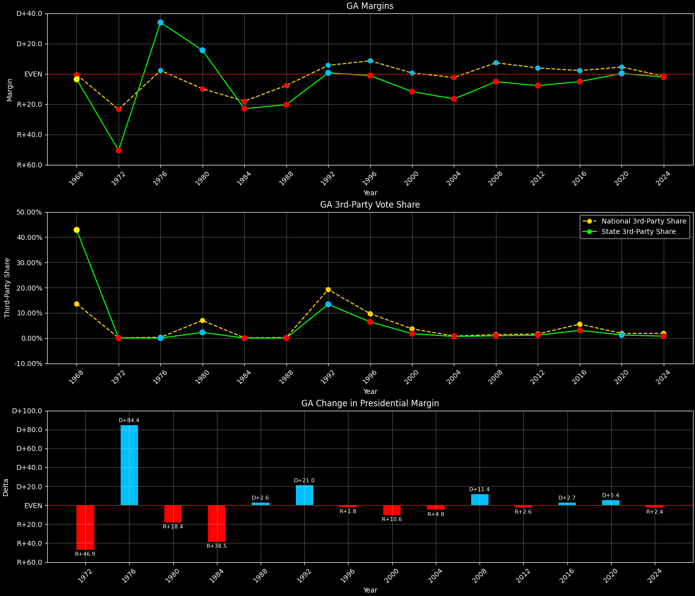
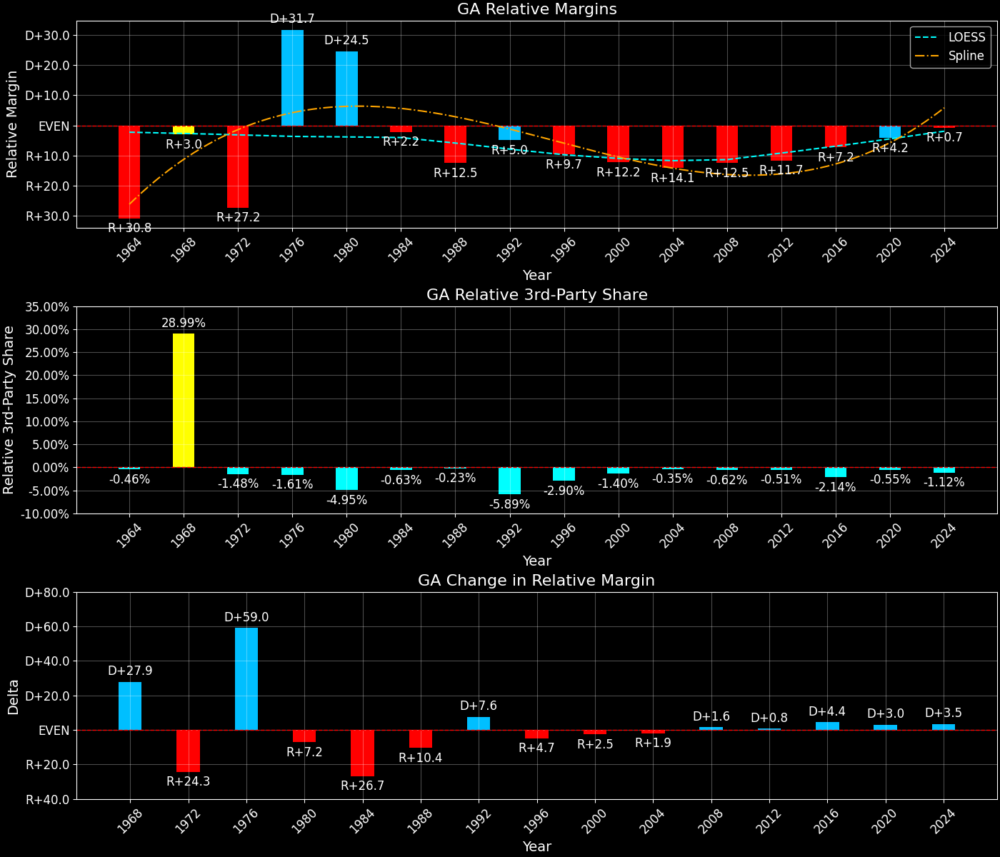
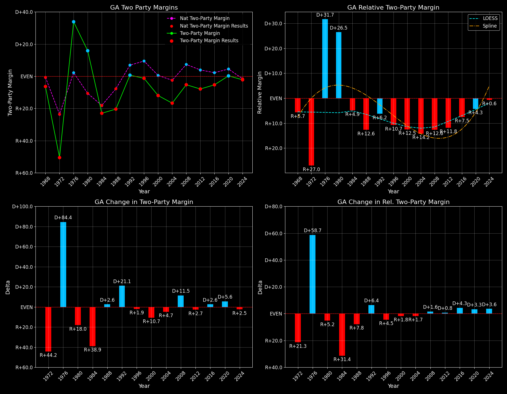

← Back to Map

Margins · 3rd-Party share · Pres. deltas

Relative margins · Relative 3rd-Party · Rel. deltas
Georgia (GA) — Total Data
| Year | EVs | D | R | State Margin | Nat. Margin | Rel. Margin | Total votes |
|---|
| 1968 | 12 | 334,237(26.8%) | 379,663(30.4%) | R+3.6 | R+0.6 | R+3.1 | 1,249,268 |
| 1972 | 12 | 289,529(24.7%) | 881,496(75.3%) | R+50.6(Δ R+46.9) | R+23.5(Δ R+23.0) | R+27.0(Δ R+24.0) | 1,171,025 |
| 1976 | 12 | 979,409(66.9%) | 483,743(33.1%) | D+33.9(Δ D+84.4) | D+2.2(Δ D+25.7) | D+31.7(Δ D+58.7) | 1,463,152 |
| 1980 | 12 | 928,678(56.6%) | 674,280(41.1%) | D+15.5(Δ R+18.4) | R+9.9(Δ R+12.1) | D+25.4(Δ R+6.3) | 1,640,020 |
| 1984 | 12 | 706,628(38.5%) | 1,128,722(61.5%) | R+23.0(Δ R+38.5) | R+18.1(Δ R+8.2) | R+4.9(Δ R+30.3) | 1,835,350 |
| 1988 | 12 | 714,792(39.8%) | 1,081,331(60.2%) | R+20.4(Δ D+2.6) | R+7.7(Δ D+10.4) | R+12.7(Δ R+7.8) | 1,796,123 |
| 1992 | 13 | 1,008,966(43.6%) | 995,252(43.0%) | D+0.6(Δ D+21.0) | D+5.6(Δ D+13.3) | R+5.0(Δ D+7.7) | 2,313,695 |
| 1996 | 13 | 1,053,848(46.2%) | 1,080,840(47.4%) | R+1.2(Δ R+1.8) | D+8.6(Δ D+3.0) | R+9.7(Δ R+4.7) | 2,281,025 |
| 2000 | 13 | 1,116,230(43.2%) | 1,419,720(55.0%) | R+11.8(Δ R+10.6) | D+0.5(Δ R+8.0) | R+12.3(Δ R+2.5) | 2,581,421 |
| 2004 | 15 | 1,366,154(41.4%) | 1,914,219(58.0%) | R+16.6(Δ R+4.8) | R+2.5(Δ R+3.0) | R+14.1(Δ R+1.9) | 3,301,451 |
| 2008 | 15 | 1,844,179(46.9%) | 2,048,785(52.2%) | R+5.2(Δ D+11.4) | D+7.3(Δ D+9.7) | R+12.5(Δ D+1.7) | 3,928,594 |
| 2012 | 16 | 1,773,827(45.5%) | 2,078,689(53.3%) | R+7.8(Δ R+2.6) | D+3.9(Δ R+3.4) | R+11.7(Δ D+0.8) | 3,897,839 |
| 2016 | 16 | 1,877,963(45.9%) | 2,089,106(51.0%) | R+5.2(Δ D+2.7) | D+2.1(Δ R+1.8) | R+7.3(Δ D+4.4) | 4,092,372 |
| 2020 | 16 | 2,474,507(49.5%) | 2,461,837(49.3%) | D+0.3(Δ D+5.4) | D+4.4(Δ D+2.3) | R+4.2(Δ D+3.1) | 4,998,482 |
| 2024 | 16 | 2,548,017(48.5%) | 2,663,117(50.7%) | R+2.2(Δ R+2.4) | R+1.5(Δ R+6.0) | R+0.6(Δ D+3.5) | 5,250,905 |
Column explanations
- Δ
- Change (delta) in the value from the previous election year.
- Year
- Election year.
- EVs
- Number of electoral votes allocated to this state or unit.
- D
- Number of votes for the Democratic candidate (raw count(pct%)).
- R
- Number of votes for the Republican candidate (raw count(pct%)).
- State Margin
- Margin between the two major-party candidates, including third-party votes ((D - R)/total).
- Nat. Margin
- The national presidential margin for that year, including third-party votes ((D_total - R_total)/total_votes).
- Rel. Margin
- The presidential margin relative to the national presidential margin (Margin - Nat. Margin).
- Total votes
- Total voter turnout or ballots cast (when provided).
Georgia (GA) — Third-Party Data
| Year | D | R | Other votes | State 3rd-Party Share | 3rd-Party Nat. Share | 3rd-Party Rel. Share |
|---|
| 1968 | 334,237(26.8%) | 379,663(30.4%) | 535,368(42.9%) | 42.85% | 13.59% | 29.27% |
| 1972 | 289,529(24.7%) | 881,496(75.3%) | 0(0.0%) | 0.00% | 0.09% | -0.09% |
| 1976 | 979,409(66.9%) | 483,743(33.1%) | 0(0.0%) | 0.00% | 0.33% | -0.33% |
| 1980 | 928,678(56.6%) | 674,280(41.1%) | 37,062(2.3%) | 2.26% | 6.98% | -4.72% |
| 1984 | 706,628(38.5%) | 1,128,722(61.5%) | 0(0.0%) | 0.00% | 0.12% | -0.12% |
| 1988 | 714,792(39.8%) | 1,081,331(60.2%) | 0(0.0%) | 0.00% | 0.21% | -0.21% |
| 1992 | 1,008,966(43.6%) | 995,252(43.0%) | 309,477(13.4%) | 13.38% | 19.23% | -5.86% |
| 1996 | 1,053,848(46.2%) | 1,080,840(47.4%) | 146,337(6.4%) | 6.42% | 9.68% | -3.26% |
| 2000 | 1,116,230(43.2%) | 1,419,720(55.0%) | 45,471(1.8%) | 1.76% | 3.65% | -1.89% |
| 2004 | 1,366,154(41.4%) | 1,914,219(58.0%) | 21,078(0.6%) | 0.64% | 0.84% | -0.20% |
| 2008 | 1,844,179(46.9%) | 2,048,785(52.2%) | 35,630(0.9%) | 0.91% | 1.38% | -0.47% |
| 2012 | 1,773,827(45.5%) | 2,078,689(53.3%) | 45,323(1.2%) | 1.16% | 1.62% | -0.46% |
| 2016 | 1,877,963(45.9%) | 2,089,106(51.0%) | 125,303(3.1%) | 3.06% | 5.54% | -2.47% |
| 2020 | 2,474,507(49.5%) | 2,461,837(49.3%) | 62,138(1.2%) | 1.24% | 1.84% | -0.60% |
| 2024 | 2,548,017(48.5%) | 2,663,117(50.7%) | 39,771(0.8%) | 0.76% | 1.88% | -1.12% |
Column explanations
- Year
- Election year.
- D
- Number of votes for the Democratic candidate (raw count(pct%)).
- R
- Number of votes for the Republican candidate (raw count(pct%)).
- Other votes
- Number of votes for third-party (other) candidates (raw count(pct%)).
- State 3rd-Party Share
- Share of the vote received by third-party (other) candidates.
- 3rd-Party Nat. Share
- The national third-party share for that year (3rd-Party votes / total votes).
- 3rd-Party Rel. Share
- Third-party share relative to the national third-party share (3rd-Party share - Nat. 3rd-Party share).

Two-party margins · relative · deltas
Georgia (GA) — Two-Party Data
| Year | EVs | D | R | 2-Party Margin | 2-Party Nat. Margin | 2-Party Rel. Margin |
|---|
| 1968 | 12 | 334,237(46.8%) | 379,663(53.2%) | R+6.4 | R+0.7 | R+5.7 |
| 1972 | 12 | 289,529(24.7%) | 881,496(75.3%) | R+50.6(Δ R+44.2) | R+23.6(Δ R+22.9) | R+27.0(Δ R+21.3) |
| 1976 | 12 | 979,409(66.9%) | 483,743(33.1%) | D+33.9(Δ D+84.4) | D+2.2(Δ D+25.8) | D+31.7(Δ D+58.7) |
| 1980 | 12 | 928,678(57.9%) | 674,280(42.1%) | D+15.9(Δ R+18.0) | R+10.6(Δ R+12.8) | D+26.5(Δ R+5.2) |
| 1984 | 12 | 706,628(38.5%) | 1,128,722(61.5%) | R+23.0(Δ R+38.9) | R+18.1(Δ R+7.5) | R+4.9(Δ R+31.4) |
| 1988 | 12 | 714,792(39.8%) | 1,081,331(60.2%) | R+20.4(Δ D+2.6) | R+7.8(Δ D+10.4) | R+12.6(Δ R+7.8) |
| 1992 | 13 | 1,008,966(50.3%) | 995,252(49.7%) | D+0.7(Δ D+21.1) | D+6.9(Δ D+14.7) | R+6.2(Δ D+6.4) |
| 1996 | 13 | 1,053,848(49.4%) | 1,080,840(50.6%) | R+1.3(Δ R+1.9) | D+9.5(Δ D+2.6) | R+10.7(Δ R+4.5) |
| 2000 | 13 | 1,116,230(44.0%) | 1,419,720(56.0%) | R+12.0(Δ R+10.7) | D+0.5(Δ R+8.9) | R+12.5(Δ R+1.8) |
| 2004 | 15 | 1,366,154(41.6%) | 1,914,219(58.4%) | R+16.7(Δ R+4.7) | R+2.5(Δ R+3.0) | R+14.2(Δ R+1.7) |
| 2008 | 15 | 1,844,179(47.4%) | 2,048,785(52.6%) | R+5.3(Δ D+11.5) | D+7.4(Δ D+9.8) | R+12.6(Δ D+1.6) |
| 2012 | 16 | 1,773,827(46.0%) | 2,078,689(54.0%) | R+7.9(Δ R+2.7) | D+3.9(Δ R+3.4) | R+11.8(Δ D+0.8) |
| 2016 | 16 | 1,877,963(47.3%) | 2,089,106(52.7%) | R+5.3(Δ D+2.6) | D+2.2(Δ R+1.7) | R+7.5(Δ D+4.3) |
| 2020 | 16 | 2,474,507(50.1%) | 2,461,837(49.9%) | D+0.3(Δ D+5.6) | D+4.5(Δ D+2.3) | R+4.3(Δ D+3.3) |
| 2024 | 16 | 2,548,017(48.9%) | 2,663,117(51.1%) | R+2.2(Δ R+2.5) | R+1.6(Δ R+6.1) | R+0.6(Δ D+3.6) |
Column explanations
- Δ
- Change (delta) in the value from the previous election year.
- Year
- Election year.
- EVs
- Number of electoral votes allocated to this state or unit.
- D
- Number of votes for the Democratic candidate (raw count(pct%)).
- R
- Number of votes for the Republican candidate (raw count(pct%)).
- 2-Party Margin
- Margin between the two major-party candidates, ignoring third-party votes ((D - R)/(D + R)).
- 2-Party Nat. Margin
- The national presidential margin for that year, including third-party votes ((D_total - R_total)/total_votes).
- 2-Party Rel. Margin
- The presidential margin relative to the national presidential margin (Margin - Nat. Margin).